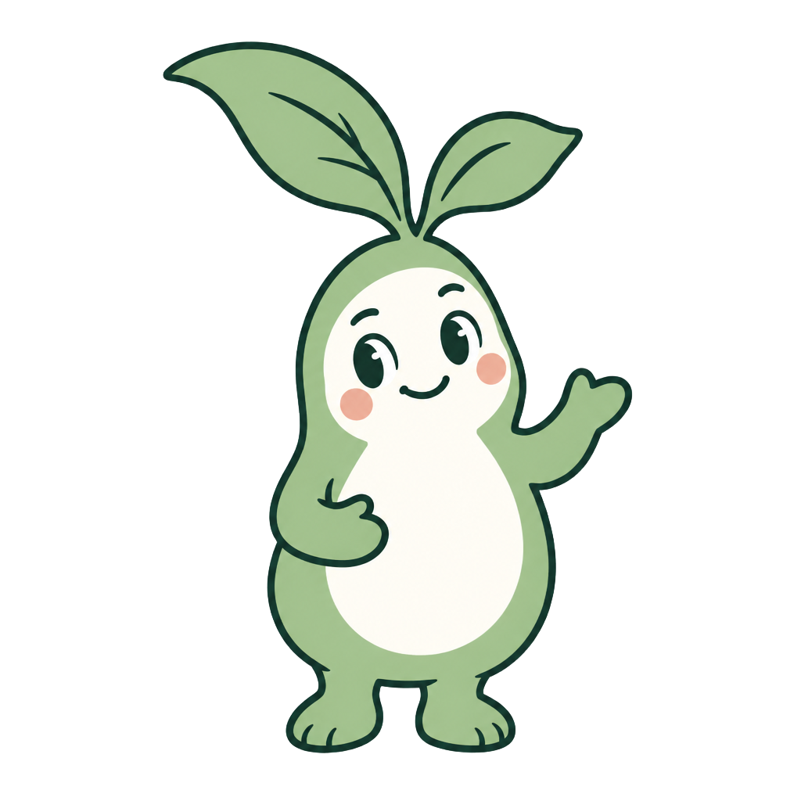

A little Pip.
A lot of relatable.
Three finished content sets with the crisp mascot: six images, three mascot videos, three slideshows, and captions.
Download the complete pack ↓


Caption
My brain at 3 a.m.: suddenly available for every meeting. 🌙
A small note can save the details for later. Track sleep, mood and how the day felt in peri.
Leave future-you a little context.
Paid subscription required.
#Perimenopause #Menopause #SleepJournal #PeriApp


Caption
Everything I wanted to say: a whole novel.
What came out: “I’m fine.” 🫠
Write down your concerns, how they affect your day, and what you want to discuss. peri helps you prepare an appointment brief you can bring with you.
Your appointment. Your questions. Your notes.
Paid subscription required.
#Perimenopause #Menopause #AppointmentPrep #PeriApp


Caption
The list has a list. The list’s list has a reminder. 🙃
A little space for how you feel belongs on it, too. Check in with your symptoms and add a note in peri.
Start with today.
Paid subscription required.
#Perimenopause #Menopause #MentalLoad #PeriApp